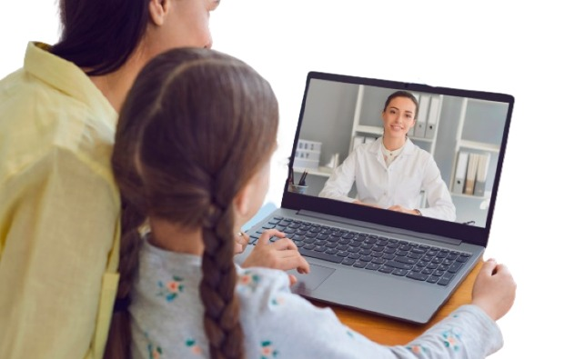

Las evaluaciones psicológicas para niños
son herramientas importantes que permiten a los psicólogos y profesionales
de la salud mental obtener una comprensión más profunda del desarrollo
emocional, social y cognitivo de un niño. Estas evaluaciones se utilizan
para identificar posibles problemas o dificultades y diseñar adecuadamente
para apoyar su bienestar. Algunas de las principales evaluaciones
psicológicas para niños incluyen:

- 1.Evaluación del desarrollo: Evalúa el desarrollo físico, cognitivo, emocional y social del niño en comparación con las etapas típicas de desarrollo para su edad.
- 2.Evaluación del coeficiente intelectual (CI): Mide la capacidad intelectual del niño y su potencial de aprendizaje.
- 3.Evaluación del comportamiento: Se utiliza para identificar problemas de comportamiento, hiperactividad, dificultades de atención y conductas desafiantes.
- 4.Evaluación de habilidades académicas: Evalúa el rendimiento académico y la comprensión del niño en áreas como lectura, escritura y matemáticas.
- 5.Evaluación emocional: Examinar la expresión emocional del niño, su capacidad para manejar el estrés y las situaciones emocionalmente cargadas.
- 6.Evaluación social: Se enfoca en las habilidades sociales del niño, sus relaciones con sus compañeros y cómo interactúa con los demás.
- 7.Evaluación de la personalidad: Explora los rasgos de personalidad del niño y cómo estos pueden influir en su comportamiento y adaptación.
- 8.Evaluación del autismo: Utilizada para detectar el espectro autista y evaluar el nivel de funcionamiento social y comunicativo del niño.
- 9.Evaluación del TDAH (Trastorno por Déficit de Atención e Hiperactividad): Ayuda a determinar si el niño muestra síntomas de TDAH y cómo abordarlos adecuadamente.
- 10.Evaluación psicodiagnóstica: Es una evaluación integral que combina varias pruebas y técnicas para obtener una visión holística del niño y sus necesidades.
Es esencial que las evaluaciones psicológicas para niños sean realizadas por profesionales capacitados en psicología infantil.
Además, es importante que los padres o cuidadores participen activamente en el proceso y brinden información relevante sobre el comportamiento y desarrollo del niño.
La confidencialidad y el respeto por los derechos del niño deben ser prioritarios durante todo el proceso de evaluación.
Se evalúa al niño en comparación con las etapas típicas de desarrollo para su edad.